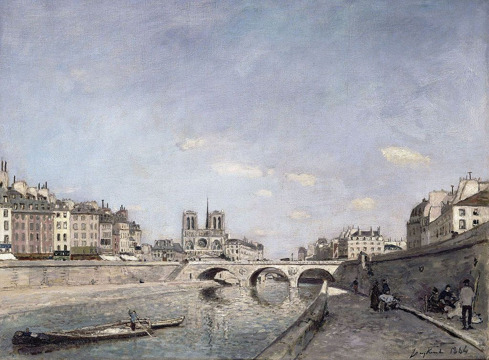

<head>
<meta charset="UTF-8" />
<meta name="keywords" content="drawing, painting" />
<meta name="description" content="drawings by Sunjy" />
<title>Sunjy</title>
<link rel="shortcut icon" type="image/x-icon" href="../../mImages/mCommon/favicon.ico" media="screen" />
<link rel="stylesheet" type="text/css" href="../../mCsses/mCommon/mCssA.css" />
<link rel="stylesheet" type="text/css" href="../../mCsses/mCommon/mCssB.css" />
<link rel="stylesheet" type="text/css" href="../../mCsses/mCommon/mCssC.css" />
<link rel="stylesheet" type="text/css" href="../../mCsses/mCommon/mCssD.css" />
<link rel="stylesheet" type="text/css" href="../../mCsses/mContent/mCssA.css" />
<link rel="stylesheet" type="text/css" href="../../mCsses/mContent/mCssB.css" />
<link rel="stylesheet" type="text/css" href="../../mCsses/mContent/mCssC.css" />
<link rel="stylesheet" type="text/css" href="../../mCsses/mContent/mCssD.css" />
</head>
<script type="text/javascript" src="../../mScripts/mContent/mContentAA.js" /></script>
<script type="text/javascript" src="../../mScripts/mContent/mContentAB.js" /></script>
<script type="text/javascript" src="../../mScripts/mContent/mContentAC.js" /></script>
<script type="text/javascript" src="../../mScripts/mContent/mContentAD.js" /></script>
<script type="text/javascript"></script> 
<script type="text/javascript">
document.write('<div class="mImgAbsolute"></div>');
/*
document.write('<p class="mFontSizeBColor" />From a white paper...</p>');
document.write('<table class="center"><tr><td>');
document.write('');
document.write('</td></tr></table>');
*/
</script>


<script type="text/javascript">
document.write('<p class="mFontSizeBColor" />The Seine and Notre-Dame in Paris</p>');
document.write('<p class="mFontSizeSColor" />“The Seine and Notre-Dame in Paris” by Johan Jongkind depicts the Seine and Notre-Dame on the horizon. The majority of the canvas is reserved for the sky, reflecting Jongkind’s Dutch background, where he trained in the tradition of the seventeenth-century Dutch landscapists.<br><br>After Jongkind moved to France, he was influenced by nineteenth-century French landscape artists, particularly Corot, whose luminous atmospheres Jongkind greatly admired.<br><br>In the 1860s, Jongkind met the young Claude Monet in Normandy and who was fascinated by Jongkind’s ability to catch fleeting variations in the weather in his watercolors. Monet later said of Jongkind:<br><br>“He was the one who really trained my eye…”<br><br>Jongkind did not exhibit with the Impressionists, but he is today regarded as one of their precursors. Several elements in this painting suggest this relationship, such as the vibrant reflections of the water and the fragmented brushstrokes.<br><br>Jongkind is considered as being positioned between Corot and Monet in the developments towards Impressionists art.<br></p>');
document.write('<table class="center" /><tr><td>');
document.write('<br>After Jongkind moved to France, he was influenced by nineteenth-century French landscape artists, particularly Corot, whose luminous atmospheres Jongkind greatly admired.<br><br>In the 1860s, Jongkind met the young Claude Monet in Normandy and who was fascinated by Jongkind’s ability to catch fleeting variations in the weather in his watercolors. Monet later said of Jongkind:<br><br>“He was the one who really trained my eye…”<br><br>Jongkind did not exhibit with the Impressionists, but he is today regarded as one of their precursors. Several elements in this painting suggest this relationship, such as the vibrant reflections of the water and the fragmented brushstrokes.<br><br>Jongkind is considered as being positioned between Corot and Monet in the developments towards Impressionists art.<br>" />');
document.write('</td></tr></table>');
</script>


